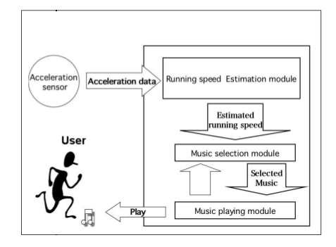

ISMIR Day 1: Plenary Session #2
A
Comparison of Signal-Based Music Recommendation to Genre Labels,
Collaborative Filtering, Musicological Analysis, Human Recommendation,
and Random Baseline by Terence Magno and Carl Sable
Terence describes 3 common recommendation strategies: Genre taxonomies,
Musicological analysis, Collaborative Filtering and the pitfalls of
these strategies (no surprises to regular readers of this blog).
Terence goes on to describe their research with music similarity based
upon content analysis. They are using stock MIR techniques (MFCCs,
GMMs, and similarity measures like euclidean distance, EMD, etc).
There goal is to tune the music similarity to match a human notion of
similarity.
The two authors rated the similarity of 200 song pairs subjectively on a 1-4 scale. Then they tuned their similar model maximize the correlation with their subjective scale. This training set seems very small - using the opinions of only two researchers does not seem likely to be able to generate a general dataset useful as a ground truth for similarity.
They then conducted a small human evaluation (13 participants) and
compared their result with AllMusic, Pandora, Last.fm and Random. This
table shows the ranking (lower is better).

I wanted to ask a question about how the evaluation was conducted. In particular I think it is important to note if the users were familiar with the recommended tracks or not, and whether or not during the evaluation could the participants listen to the music. One would expect that a good recommendation for a novel song would not be known by the participant - if they can't listen to the unknown recommendation they may rate the recommendation poorly.
The results don't agree with other comparisons I've seen between content-based and other recommendations strategy. I'm curious as to why. In my experience, content-based systems will perform significantly worse than these other systems when popular music is used.
Development of An Automatic Music Selection System Based on Runner’s Step Frequency by
Masahiro Niitsuma, Hiroshi Takaesu, Hazuki Demachi, Masaki Oono and Hiroaki Saito
This paper presents an automated music selection system based upon a
runner's step frequency.
They describe a preliminary study that concluded that people tend to
feel comfortable with the BPM of a song matches their steps-per-minute
when they are running.
Next they describe their system - first they estimate the running speed by looking at accelerometer data amd calculating the Steps per Minute from that data. Next they group music based on its BPM. Songs with similar BPMs (within 4 BPM) are clustered - then they query the DB with runner's SPM and select one track from the corresponding group.
They evaluated the accuracy of the system and the user experience. The user experience was improved when the step tracking system was used.
 A Robot Singer With Music Recognition Based on Real-Time Beat Tracking by Kazumasa Murata, Kazuhiro Nakadai, Kazuyoshi Yoshii, Ryu Takeda, Toyotaka Torii, Hiroshi G. Okuno, Yuji Hasegawa and Hiroshi Tsujino
Their goal is construct a robot singer that can detect musical beats by using its own ears and sing /scat/step according to the detected beat in real-time.
Challenges: robust to noise, adaptive to tempo changes, works in realtime.
The author went on to describe how the system works and showed how their new beat tracker was able to more quickly identify tempo changes than previous systems.
The author showed a couple of videos showing a dancing robot that would adapt to songs with different tempos. Interesting and fun work.

All in all a good session -- but it was a bit of an odd coupling of one paper on recommendation and two on music recognition.